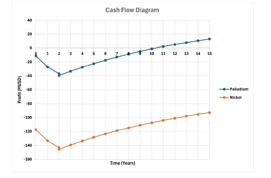

Cost Analysis
Economic Analysis
Equipment costs, fixed capital investment, operating costs, and NPV comparison between palladium and nickel catalyst scenarios over the 15-year plant life.
Bottom Line
Catalyst comparison: NPV over 15 years
Palladium's higher upfront cost is offset by its dramatically superior selectivity — requiring far less catalyst mass and producing less waste. Nickel demands substantially more material due to lower selectivity, pushing its NPV deeply negative despite the lower per-kilogram price.
At a product sale price of $3.00/kg ε-caprolactam, the palladium-based plant breaks even after 10 years (including 2 years of construction). Discount rate: 13.74%. Plant life: 15 years (2 construction + 13 operating). Location: Albuquerque, NM 87120.
Cash Flow Diagram

Figure 3: Palladium reaches positive NPV (~year 10); nickel remains deeply negative throughout the 15-year plant life
Capital Expenditure
Equipment Cost Summary
All equipment costs estimated using CAPCOST with a 2025 CEPCI of 542. Gate control valves estimated at $450 each (purchased) with Bare Module Factor of 4.8. All costs in USD.
Purchased equipment cost
Base cost of all process equipment
Bare module cost
Includes installation, materials, labor
Grass roots cost (FCI)
Total greenfield plant capital — used as FCI
Lang factor cost
Lang factor: 4.74
Table 7 — Reactor costs
| Type | Tag | Purchased equipment cost | Bare module cost | Base equipment cost | Base bare module cost |
|---|---|---|---|---|---|
| Fermenter | R-1 | $115,000 | $460,000 | $115,000 | $460,000 |
| Autoclave (×3) | R-2 : R-4 | $112,000 | $447,000 | $112,000 | $447,000 |
Table 8 — Pump costs
| Type | Tag | Purchased equipment cost | Bare module cost | Base equipment cost | Base bare module cost |
|---|---|---|---|---|---|
| Centrifugal | P-1 | $7,170 | $18,400 | $4,630 | $15,000 |
| Centrifugal | P-2 | $7,460 | $19,200 | $4,810 | $15,600 |
| Centrifugal (×2) | P-3 : P-4 | $7,150 | $18,400 | $4,610 | $14,900 |
| Centrifugal (×5) | P-5 : P-9 | $7,220 | $18,500 | $4,660 | $15,100 |
| Centrifugal | P-10 | $7,220 | $18,600 | $4,660 | $15,100 |
| Centrifugal (×2) | P-11 : P-12 | $7,220 | $18,500 | $4,660 | $15,100 |
| Centrifugal | P-13 | $7,150 | $18,400 | $4,610 | $14,900 |
| Centrifugal (×4) | P-14 : P-17 | $7,220 | $18,500 | $4,660 | $15,100 |
Table 9 — Other equipment costs
| Type | Tag | Purchased equipment cost | Bare module cost | Base equipment cost | Base bare module cost |
|---|---|---|---|---|---|
| Empty vertical vessel (distillation tower) | T-1 | $393,000 | $1,350,000 | $283,000 | $1,150,000 |
| Horizontal storage vessels (×8) | V-1 : V-8 | $191,000 | $574,000 | $191,000 | $574,000 |
| Process evaporator | E-1 | $2,260,000 | $4,820,000 | $2,260,000 | $4,820,000 |
| Centrifugal liquid-liquid separator | S-1 | $17,100 | $26,800 | $17,100 | $26,800 |
| Floating head heat exchangers (×9) | HX-1 : HX-9 | $170,000 | $385,000 | $62,400 | $205,000 |
| Gate control valves (×48) | GV-1 : GV-48 | $450 | $2,160 | $450 | $2,160 |
Table 10 — Fixed capital investment summary
| Cost metric | Total cost (USD) |
|---|---|
| Purchased equipment cost | $6,301,820 |
| Bare module cost | $16,369,700 |
| Bare equipment cost | $5,201,490 |
| Base bare module cost | $14,579,380 |
| Module cost | $19,320,000 |
| Grass roots cost (FCI) | $26,610,000 |
| Lang factor | 4.74 |
| Lang factor cost | $29,900,000 |
The Fixed Capital Investment (FCI) used in the cash flow analysis is the Grass Roots Cost ($26,610,000) — the default FCI in CAPCOST software.
Operating Costs
Table 11 — Annual manufacturing costs
| Cost category | Annual cost | Detail |
|---|---|---|
| Raw materials (total) | $1,268,844,948/yr | Oleum: 55,609 kg/hr · H₂: 60,873 kg/hr · Water: 58,932 kg/hr · Phenol: 58,760 kg/hr |
| Utility costs (after HEN) | $2,440,000/yr | Electricity: $79,009 · Low-pressure steam: $6,571 · Cooling water: $112,935 · Coal: $2,245,000 |
| Labor costs | $4,241,590/yr | 53 operators · Median salary $80,060/yr |
| Waste treatment | $1,664,400/yr | — |
| Taxation rate | 25% | 20% Federal + 5% State (New Mexico) |
Raw material unit prices
$1.00/kg58,760 kg/hr annual flow
$1.00/kg60,873 kg/hr annual flow
$0.13/kg55,609 kg/hr annual flow
$1.42/kgSignificant cost driver
$0.0006/kg58,932 kg/hr; recycled extensively
Table 4 — Pump utility demand & cost
17 centrifugal pumps provide all fluid transport. Total electrical power: 127 kW. Total annual electricity cost: $71,220.
| Equipment | Utility usage (kW) | Annual utility cost (USD) |
|---|---|---|
| P-1 | 7.3 | $4,100 |
| P-2 | 8.3 | $4,660 |
| P-3 | 7.2 | $4,060 |
| P-4 | 7.2 | $4,060 |
| P-5 | 7.5 | $4,190 |
| P-6 | 7.5 | $4,190 |
| P-7 | 7.5 | $4,190 |
| P-8 | 7.5 | $4,190 |
| P-9 | 7.5 | $4,190 |
| P-10 | 7.5 | $4,190 |
| P-11 | 7.5 | $4,190 |
| P-12 | 7.5 | $4,190 |
| P-13 | 7.2 | $4,060 |
| P-14 | 7.5 | $4,190 |
| P-15 | 7.5 | $4,190 |
| P-16 | 7.5 | $4,190 |
| P-17 | 7.5 | $4,190 |
Table 5 — Heat exchanger utility demand & cost
9 floating-head heat exchangers using cooling water and low-pressure steam. HX-1 dominates due to the high-temperature R-1 outlet stream (924 °C → 85 °C).
| Equipment | Utility usage (MJ/h) | Annual utility cost (USD) |
|---|---|---|
| HX-1 | 35,500.0 | $112,000 |
| HX-2 | 56.0 | $946 |
| HX-3 | 290.0 | $910 |
| HX-4 | 7.8 | $25 |
| HX-5 | 56.0 | $946 |
| HX-6 | 56.0 | $946 |
| HX-7 | 56.0 | $946 |
| HX-8 | 56.0 | $1,841 |
| HX-9 | 56.0 | $946 |
Table 6 — Evaporator utility demand & cost
| Equipment | Utility usage (MJ/h) | Annual utility cost (USD) |
|---|---|---|
| E-1 | 50.0 | $7.79 |
The evaporator produces steam during HAS/water separation. Rather than venting this, latent heat is recovered via a heat exchanger and integrated into the HEN to preheat feed streams — reducing overall steam demand.
Recommendations
Management recommendation
Based on economic performance and technical feasibility, management is recommended to proceed with the palladium-based process. Suggested next steps before full-scale implementation:
Pilot plant study
Verify optimal reactor pressures — especially for the PFR — before committing to full-scale construction. Aspen modeling revealed that theoretical literature pressures don't always converge.
Life cycle assessment
Quantify net emissions vs. petroleum-based caprolactam routes. This data strengthens the investment case and supports ESG-aligned funding.
Process optimization
Focus on reactor kinetics (especially CSTRs using unified parameters) and catalyst efficiency for R-1. More accurate per-reactor kinetics could improve yield and reduce material costs.
Regulatory engagement
Early engagement with New Mexico regulatory agencies and the local community is recommended given the site's proximity to I-40 and the use of fuming sulfuric acid and ammonia.